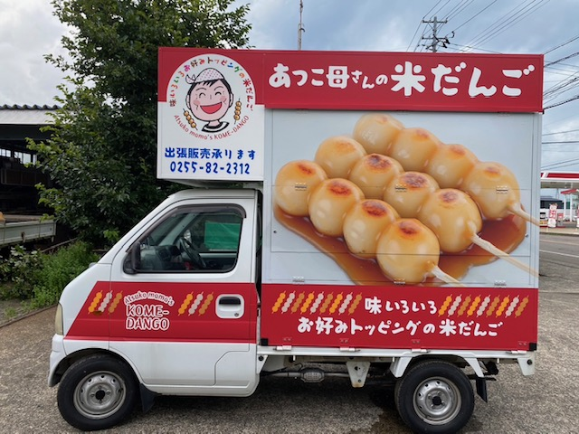

誕生秘話

あつこ母さんの米だんご
〜あの味が生まれた日々〜
まだ私が少女だった頃のこと。新潟の山里では、冬になると囲炉裏のそばで、母がこしらえてくれた「やま餅」を頬張ったものです。冷えた体に、やさしい温もりと香ばしさが染み渡る。そんな、素朴で贅沢なひとときでした。
あれから年月が流れ、私は温泉旅館の女将となり、三人の息子に恵まれました。その子たちがまだ小学生だった頃のこと。ある日、息子がふと、こんなことを言いました。「〇〇くんの家で、手作りのおやつを食べさせてもらったんだ。すごく美味しかったよ。お母さんも、手作りのおやつ作ってくれないかな？」その一言が、胸にすとんと落ちたのです。
当時はスキーブームの真っ只中。旅館は毎日大忙しで、夕飯の支度すら夜9時を過ぎることもありました。そんな忙しさの中で、空腹を抱えて帰ってくる子供たちに、せめて何か、心もお腹も満たせるような手作りのおやつを食べさせてあげたい。そう思いました。
ふと、記憶の引き出しの奥から浮かんできたのが、あの懐かしい「やま餅」の味でした。おひつに残ったご飯をつぶして団子にし、胡桃味噌を添えて仕上げる、妙高の郷土の味。それからというもの、空いた時間を見つけては試行錯誤の日々。先代のお母さんから受け継いだみたらし団子のタレを使ってみたり、ツナやマヨネーズをトッピングしてアレンジを重ねていきました。
ある日、完成したのが「ツナマヨネーズ団子」。それを口にした息子たちは、目を輝かせながら言いました。「お母さん、これ、めちゃくちゃ美味しい！」嬉しそうに頬張るその笑顔は、私にとって何よりのご褒美でした。
その頃からでしょうか。息子の友達は、私のことを「あつこ母さんのだんご」と呼ぶようになりました。あつこ母さんのだんご……それは、忙しい日々の中で、子供たちの笑顔とともに生まれた、ささやかな幸せのかたちなのです。